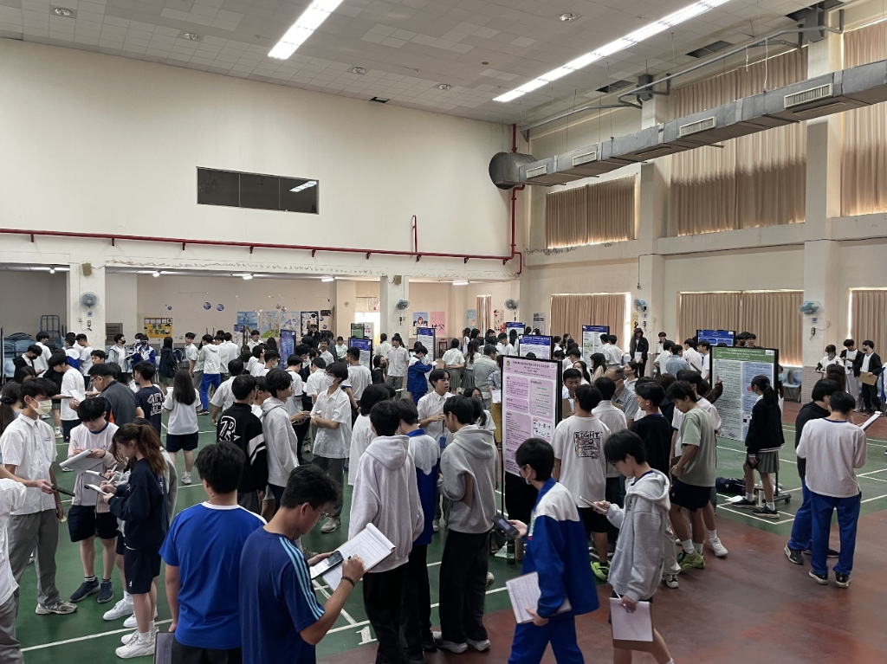
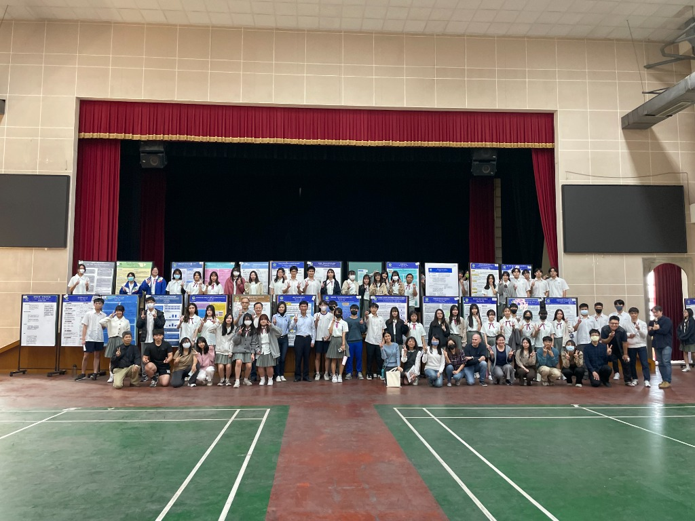
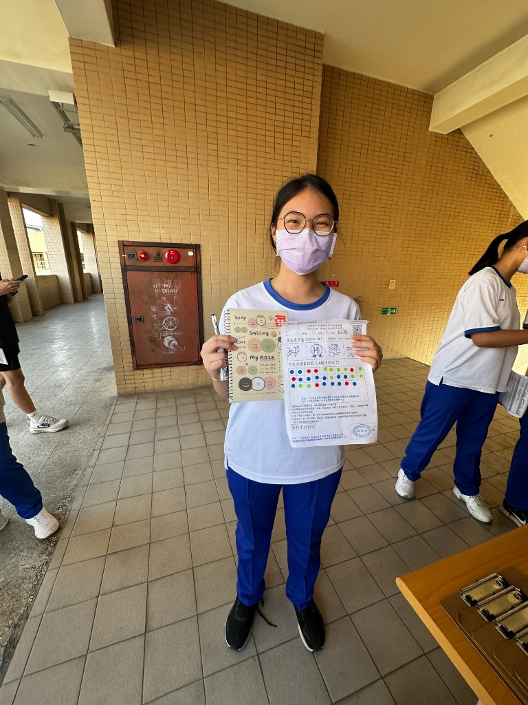
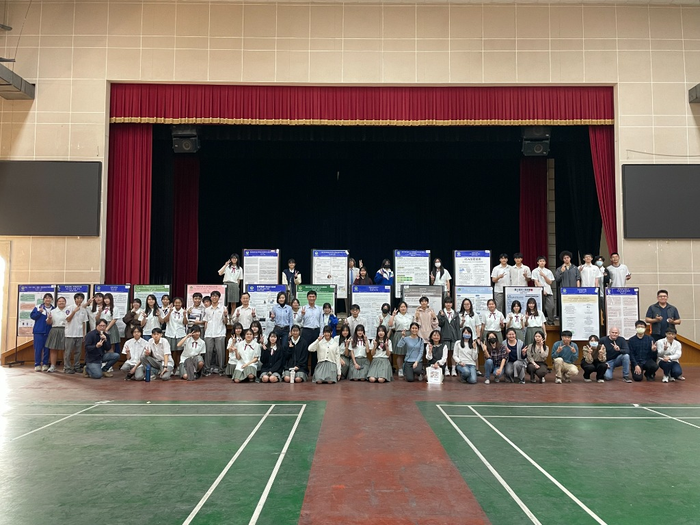
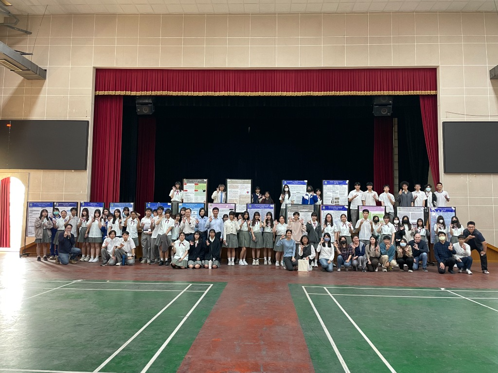
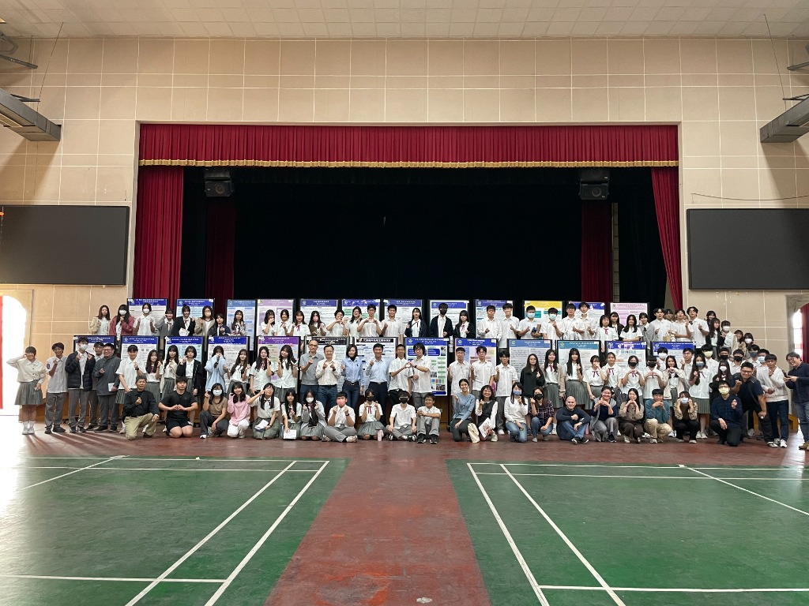

「啟程」，不僅是一場學術心血的落成，更是青春歲月裡一次浪漫的壯遊。在科學的嚴謹、科技的冷靜、人文的溫柔與藝術的靈動之間，我們以紙筆為舵，尋覓著屬於這個世界的解答。
每一份專題，皆是學子們於浩瀚書海中探索的獨特航線。我們從四面八方匯集於此，秉持著「膽大心細」的求真之火，在未知的知識海域中「勇往前行」。待盛會將息之際，我們將帶著行囊裡的豐碩，揮別交錯的航道各奔東西，航向更為遼闊的星辰大海。

如何參與這場研究之旅
分為「一般發表」與「雙語發表」，向下細分「人社藝術」、「數理科學」、「工程與設計」三組。每隊上限 5 人，獎項獨立評比。
評比分為書面與實體兩大類。請務必將所有檔案（報告、簡報、海報、簡介）依據實施計畫辦法內容修正，並轉存為 PDF 格式上傳。決賽將邀請大學教授擔任評審，進行專業問答。
鼓勵合理使用 AI 作為輔助工具（如除錯、文法檢查），但嚴禁代筆、捏造數據或抄襲。所有參賽隊伍皆須透過 Google 表單連結 進行線上勾選與聲明確認。
5/20 公告時程。利用課堂進行 5 分鐘簡報初賽（不進行問答，全程錄影）。
6/1 中午公告入選名單，決賽組需於 6/3 下午 1 點前繳交最終版檔案。
入選組別於大會場地與研討會場進行實地佈置與預演準備。
上午海報組決賽；下午進行研討會場分享與大會決賽，由大學教授親自評審問答。
公告第 6 屆專題《啟程》特優、優選及佳作名單，並於三民專題牆留名。
幕後的策展匠人與推手
點閱進入數位卷宗，探尋計畫詳情
捕捉研究過程中的精彩瞬間





活動進行中，照片即將更新...
專題問題請洽教務處教學組 趙老師